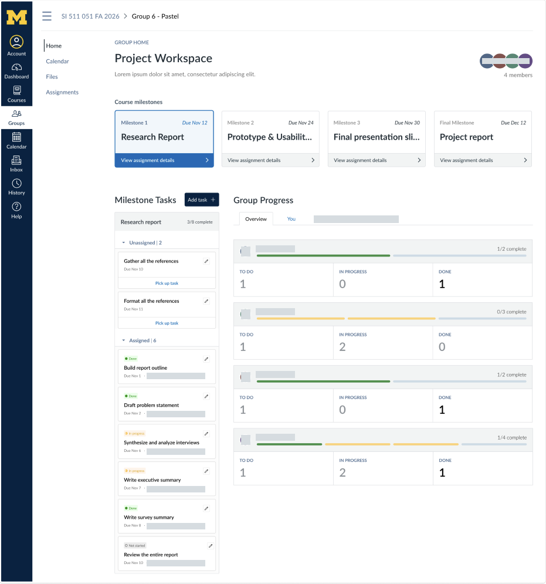
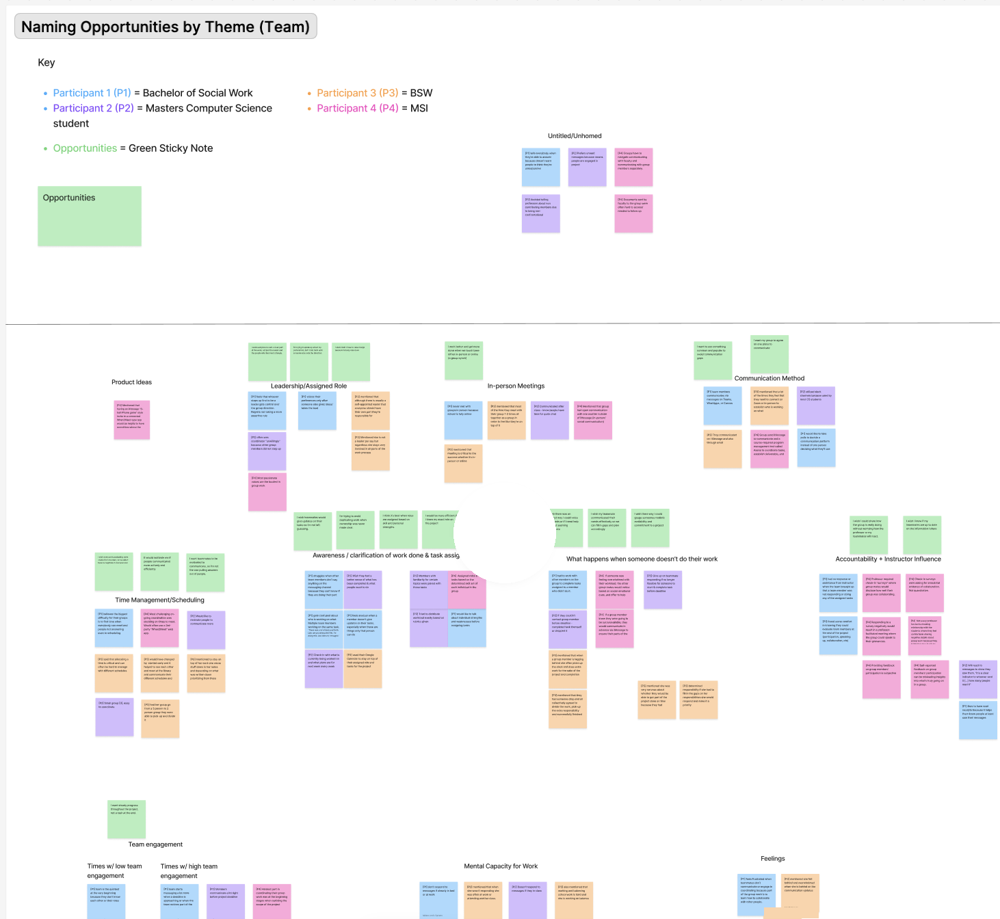
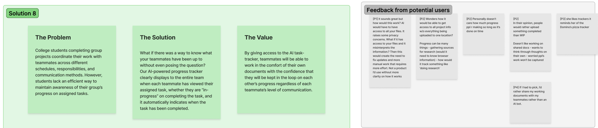
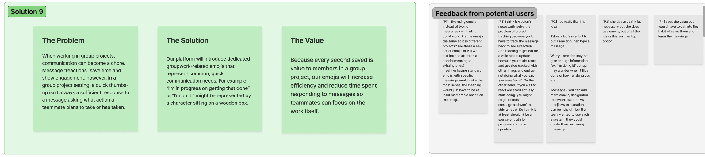
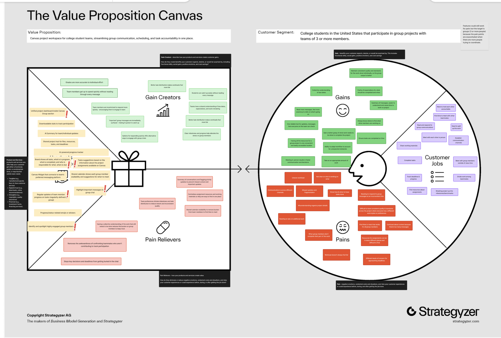
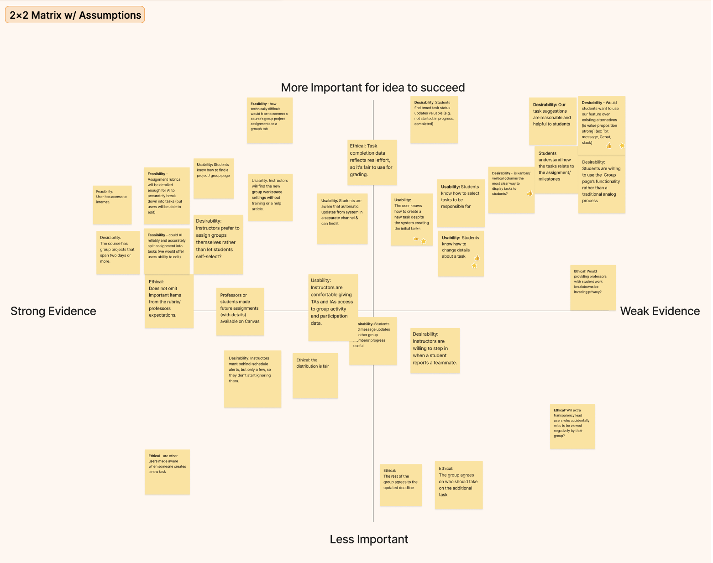
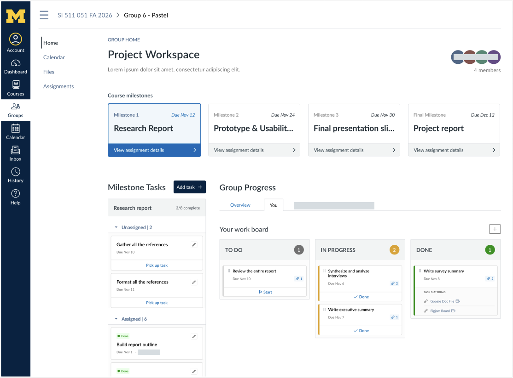
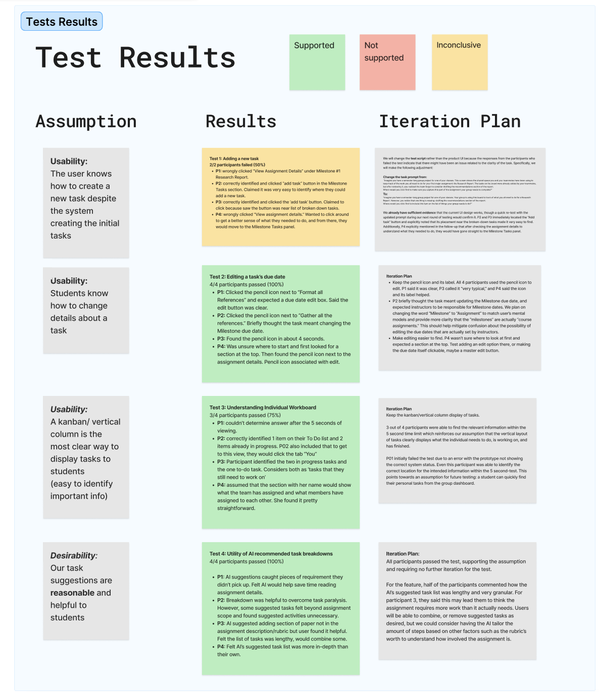

UX RESEARCH · PRODUCT DISCOVERY · USABILITY TESTING
Designing a Group Project Workspace for Canvas LMS
A group assignment can be easy to find in Canvas and still be hard to coordinate. To figure out who was doing what, students described piecing together updates across group chats, shared documents, and Canvas.
University of Michigan · Graduate team project · 2026
In our research, I saw a recurring need. Students wanted to know what was done, who owned the remaining work, and what was due next without having to chase down teammates for an update.
Our team chose to build out the existing Canvas Group Workspace because students already used Canvas to check assignments and deadlines. We wanted them to coordinate their work in that same space without having to add another tool. Our prototype paired course milestones with a shared task list and a view of each teammate’s progress.

Where group work broke down
Our team drew on four student interviews and survey research. As I grouped the interview notes, I saw how often the same coordination problems showed up in different students’ accounts. A teammate might miss a decision buried in the chat, or two people might start on the same task because nobody was sure who owned it.
- Make progress visible
- Students wanted to see what was finished, what remained, and who owned each task.
- Surface important updates
- Students needed a reliable way to catch up on decisions and changes across conversations.
- Support timely responses
- Unanswered messages and uneven participation made it harder to keep group work moving.

Exploring solutions
We gathered feedback on nine ideas. Two pitches explored how students might share progress with less effort. An AI tracker could update task status automatically, while emoji reactions would let students post a quick signal themselves. The feedback helped us see what each approach would ask students to give up in exchange for convenience.
- AI progress tracker
- Students asked how it would track work across tools and what access it would need to their files.
- Project-status reactions
- Students liked the idea of a quick response, but questioned whether an emoji could communicate enough detail about progress.


Defining the workspace
We organized the workspace around course milestones so students could see how their individual tasks added up to the larger assignment. A group view showed who owned each task and where work stood. An individual view gave students a place to focus on their own workload.
- Student jobs
- Divide work, assign owners, track deadlines, and stay current on progress.
- Student pain points
- Fragmented messages, unclear responsibilities, and uneven visibility into who’s doing what.
- Proposed value
- A shared Canvas workspace that brings milestones, assignments, and progress together.
My teammates created the journey map and service blueprint, tracing the student experience from dividing up work through submission and grading and mapping the Canvas and instructor processes that would support it.

Prioritizing what to test
I helped rank assumptions by their importance to the concept and the strength of our evidence. We focused testing on whether students could add and edit tasks, understand their individual board, and find value in AI-generated task suggestions.
- Importance
- How much does the workspace depend on this assumption?
- Evidence
- How much support do we already have from research?
- Test first
- Prioritize important assumptions with limited evidence, including task discoverability and the usefulness of suggested tasks.

Testing the concept
With four participants, we ran two first-click tests for adding and editing tasks, a five-second test for reading the individual work board, and a comparison of students’ own task breakdowns with AI-generated suggestions.

Results and proposed iterations
I helped interpret the results and identify what to keep, revise, or test again. These findings come from four sessions with a prototype.
- Add a task 2/4 passed
- Inconclusive. Retest with clearer instructions to distinguish scenario confusion from trouble finding Add Task.
- Edit task details 4/4 passed
- Keep the pencil icon and clarify the difference between a milestone deadline and an individual task deadline.
- Read the work board 3/4 passed
- Keep the Kanban layout and retest after addressing the prototype limitation that affected one session.
- Evaluate AI suggestions 4/4 passed
- Explore ways to combine, remove, and edit suggestions. Some participants found extra tasks beyond the assignment scope.

Next steps
I’d rewrite and pilot the Add Task scenario before retesting so I could tell whether the wording or the interface was sending participants to the wrong place. I’d also test whether students can edit AI-generated suggestions to fit the assignment before sharing them with their group.
What this project taught me
This project taught me how to tell the difference between evidence of a problem and evidence for a solution. The interviews showed that students had trouble keeping track of group work. When we pitched an automatic tracker, students raised a separate question: would it even capture the work they did in meetings or in their own documents? That feedback made a shared task list worth exploring on its own.
I also learned how to choose what to test first. A shared task list depends on students being able to add and update their work, so we tested those actions before drawing bigger conclusions about whether students would use the workspace. I came away with a way to move an idea forward: identify what it depends on, test the assumptions with the least evidence, and use what I learn to make the next decision.